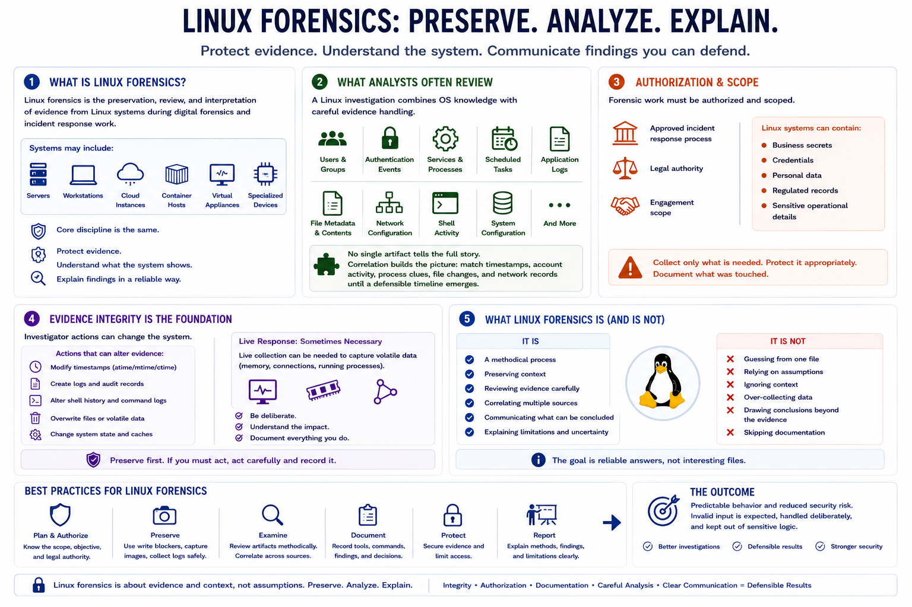

What Is Linux Forensics?
Connecting to LMS... Progress: in progress

Narration
Linux forensics is the preservation, review, and interpretation of evidence from Linux systems during digital forensics and incident response work. The system might be a traditional server, a developer workstation, a cloud instance, a container host, a virtual appliance, or a specialized device that runs a Linux-based operating system. The core discipline is the same: protect evidence, understand what the system shows, and explain findings in a reliable way.
A Linux investigation often combines operating system knowledge with careful evidence handling. Analysts may review users, groups, authentication events, services, scheduled tasks, application logs, file metadata, network configuration, and shell activity. No single artifact tells the full story. The work is usually about correlation: matching timestamps, account activity, process clues, file changes, and network records until a defensible timeline emerges.
Authorization matters. Forensic work should be performed under an approved incident response process, legal authority, or engagement scope. Linux systems can contain business secrets, credentials, personal data, regulated records, and sensitive operational details. The analyst should collect only what is needed, protect it appropriately, and document what was touched.
Evidence integrity is the foundation. Investigator actions can change timestamps, create logs, alter command history, or overwrite volatile data. Sometimes live response is necessary, but it should be deliberate and documented. Linux forensics is not about guessing from one interesting file. It is about preserving context, reviewing evidence carefully, and communicating what can and cannot be concluded.